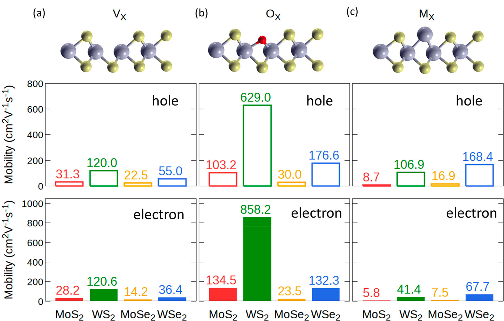

Abstract
2D transition metal dichalcogenide (MX(2)) semiconductors are promising candidates for electronic and optoelectronic applications. However, they have relatively low charge carrier mobility at room temperature. Defects are important scattering sources, while their quantitative roles remain unclear. Here we employ first-principles methods to accurately calculate the scatterings by different types of defects (chalcogen vacancies, antisites, and oxygen substitutes) and the resulting carrier mobilities for various MX(2) (M = Mo/W and X = S/Se). We find that for the same X, WX(2) always has a higher mobility than MoX(2), regardless of defect type and carrier type. Further analyses attribute this to the universally weaker electron-defect coupling in WX(2). Moreover, we find filling the chalcogen vacancy with O always improves the mobility, while filling by a metal atom decreases the mobility except for WSe2. Finally, we identify the critical defect concentrations where the defect- and phonon-limited mobilities cross, providing guidelines for experimental optimization.
Reference
[1] Z. Xiao*, R. Guo, C. Zhang, and Y. Liu, Point Defect Limited Carrier Mobility in 2D Transition Metal Dichalcogenides. ACS Nano 18, 8511 (2024).